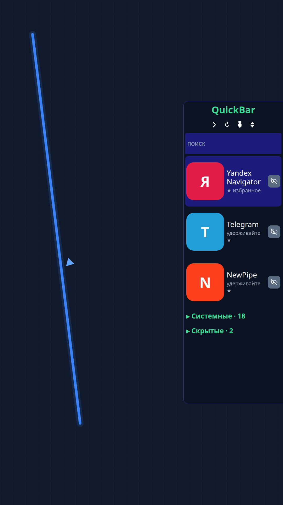
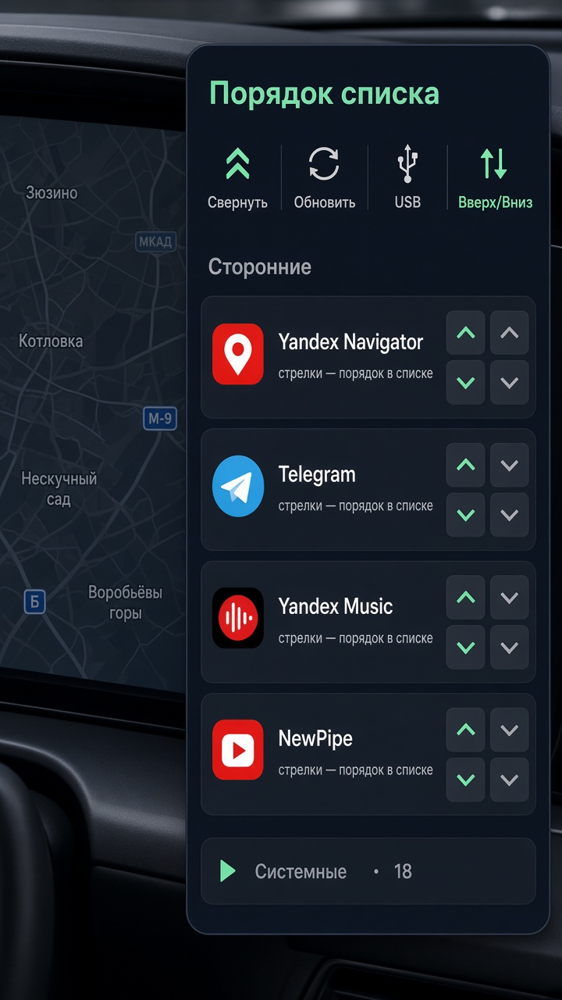
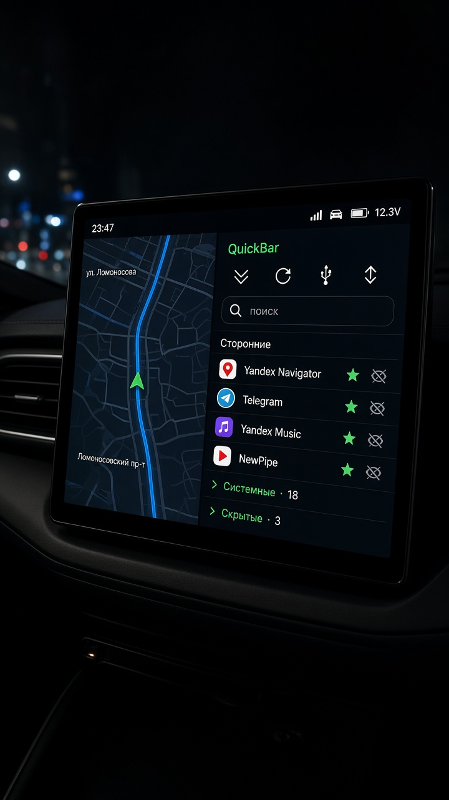
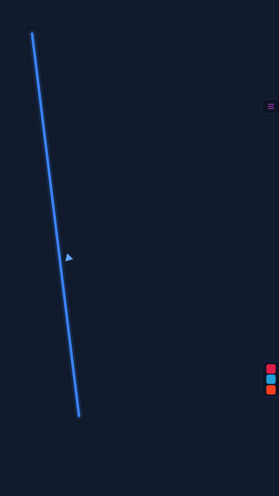

Навигатор не пропадает
Панель узкая, справа. Дорога, стрелка, пробки — на месте, пока вы открываете мессенджер.
Changan Lamore · штатный экран
Не сворачивайте навигатор, чтобы открыть Telegram. QuickBar живёт поверх всех окон: Яндекс, музыка, YouTube — в один тап, пока вы за рулём.

Не за каждое приложение. Не каждый визит в сервис. Один раз поставили панель.
Платите один раз. Дальше нужные приложения ставите сами — сколько угодно, когда угодно.
Подключаем экран, ставим QuickBar, запускаем установщик на вашем ноутбуке. После этого любой файл приложения кладёте в программу — она сама ставит его на машину.
Повторные визиты и плата «за каждое новое» не нужны.
Хочу на свою LamoreНавигатор остаётся на экране. Панель — узкая полоса справа, крупные иконки, читаемые названия.



Макет интерфейса. Нажмите «Системные» или «Скрытые» — в машине они так же закрыты, пока не откроете.
Экран большой. Жалко отдавать его одному навигатору — и жалко прятать навигатор ради чата.
Панель узкая, справа. Дорога, стрелка, пробки — на месте, пока вы открываете мессенджер.
Что ездит с вами каждый день — наверху. Удержали палец — в избранное. Лишнее спрятали.
Выключили зажигание, завели снова. QuickBar поднимается сам, без лишних окон поверх карты.
Один раз поставили. Новые приложения добавляете с ноутбука, когда захотите. Без поездок и без доплат.
Иконки и подписи читаются с водительского кресла. Не прищуривайтесь на мелкое меню.
Для владельцев Changan Lamore 2023. Не прошивка «для всех китайцев» и не отключение защиты чужой машины.
Перезвоним, согласуем время. Установка 5 000 ₽ — один раз.
Заявка падает в общую таблицу заказов ИТ-Мастерской. Мы видим имя и телефон, перезваниваем, ставим панель на вашу Lamore.
5 000 ₽ — установка. Приложения после этого — ваши, без абонентки.